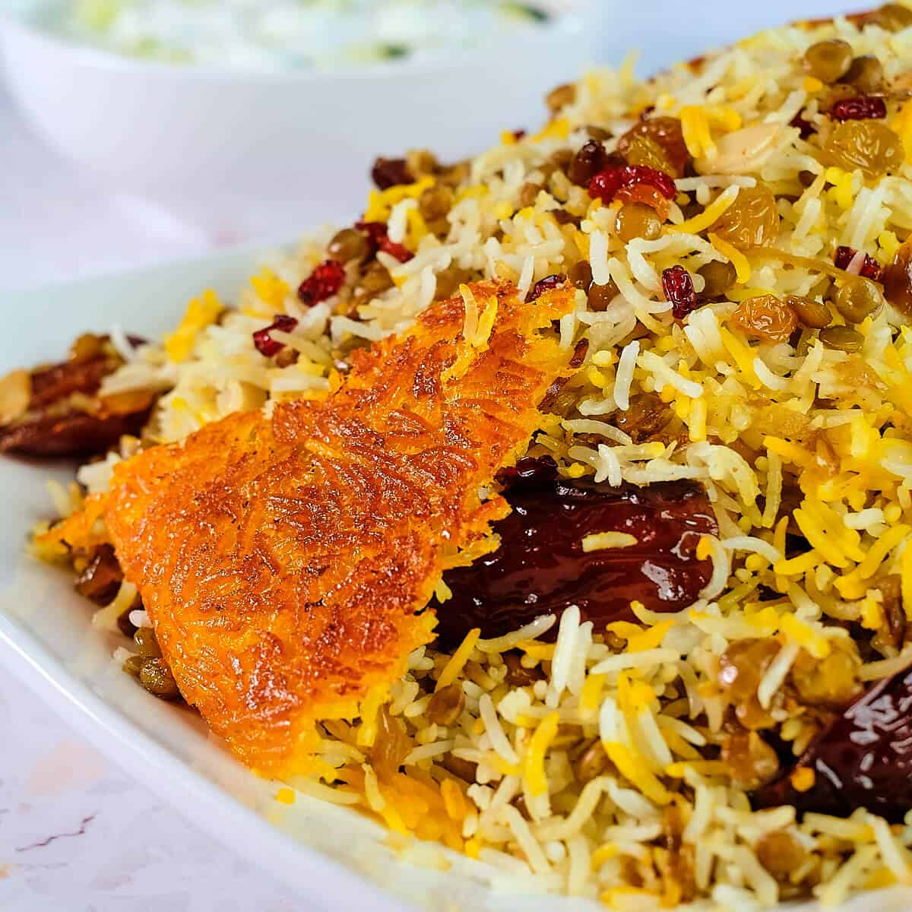

Adas Polo

Iranian lentil and rice dish
Adas polow is one of the traditional Iranian dishes that I grew up with.
It's a great rice dish to prepare when you don't have a lot of time on
your hands yet you want something delicious. Rice with lentils is not
usually served in formal gatherings. However, you can make it for your family,
close relatives and friends. That's what I do. Adas polow can be served with
cooked ground beef. You can serve the cooked ground beef over the rice, on the
side of the rice or you can cook it together with rice and lentils in the same
pot.
Ingredients:
- 2 cups rice
- 1 1/2 cup dried lentils
- 1/4 teaspoon ground saffron, dissolved in 3 tablespoons of hot water
- 1 small onion, finely chopped
- Dash of cinnamon
- 1/4 teaspoon turmeric
- Salt and pepper to taste
- Vegetable oil or olive oil
Toppings:
- Fried onion
- 1/2 cup raisins
Steps:
- Pick over the lentils and rinse a couple of times. Place in a pot, add
2 1/2 cups of water, bring to a boil on medium-high heat. Reduce heat to
medium-low, add 1/4 teaspoon salt, cover and cook for about 20 minutes or
until the lentils are soft and there is little liquid is left in the pot.
Set aside.
- Rinse rice with cool water, soak in 3-4 cups of water with 2 tablespoons
of salt for a couple of hours.
- Saute chopped onions in 2 tablespoons of oil on medium heat until the onions
begin to soften, add turmeric, stir, Add the raisins, dates, a dash of cinnamon,
saute lightly for a couple of minutes. Set aside
- In a large non-stick pan, bring 4 cups of water to a rapid boil.
- Drain rice and pour into the boiling water. Bring water to back a boil for 10
minutes on medium-high heat. Test to see if the rice is ready. Rice should be firm
in the center and soft on the outside. Drain and rinse with cool water.
- Wash the pot and return to heat. Add a couple of tablespoons of vegetable oil to the pot.
With a large spatula, place a layer of rice into the pot, place a layer of cooked
lentils, then another layer of rice, continue building it into a pyramid shape.
Spread the liquid saffron over the rice. In order to release the steam make 2-3
holes in the rice with the bottom of the spatula.
- Cover and cook for 10 minutes on medium-high heat until rice is steaming, lower heat to
medium-low and steam the rice for another 45-50 minutes.
Serve rice on a large platter topped with fried onions, raisins and dates. This dish is best served with mast o khiar and salad shirazi.
Enjoy!
Recipe from Tumeric Saffron